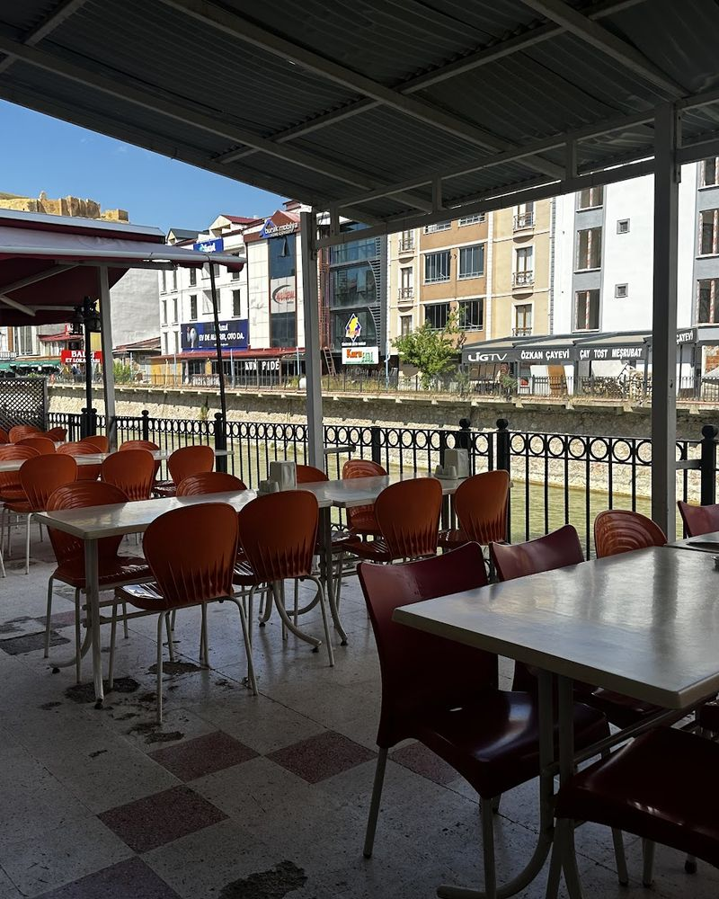

Hakkımızda
Bayburt Merkez’de yıllardır değişmeyen lezzet durağınız.
Çoruh nehrinin kenarında, Belediye’nin altında; sabah 6’dan gece yarısına kadar sıcak sofra.

Çoruh Lokantası, Cumhuriyet Caddesi’nde, Belediye’nin altında, Çoruh nehrinin hemen kenarındadır. Geleneksel Türk mutfağının en samimi lezzetlerini sunarız: odun ateşinde pişen meşhur et dönerimiz, her gün taze hazırlanan tencere yemeklerimiz ve sıcak çorbalarımız.
Sabah 6’da kapımızı açar, gece yarısına kadar ocağımızı sıcak tutarız. İster terasımızda nehri seyrederek, ister salonumuzda oturun; ister paket alın, ister adresinize gönderelim.
-
Odun ateşinde döner
Dönerimiz odun ateşinde pişer; tadını misafirlerimiz yorumlarında hep ilk sırada anar.
-
Günlük tencere yemekleri
Kuru fasulye, güveç, sulu köfte, Bayburt tava… Her gün taze, ev yemeği tadında.
-
Çoruh manzaralı teras
Kale manzarası ve nehrin sesi eşliğinde, sakin ve temiz bir ortam.